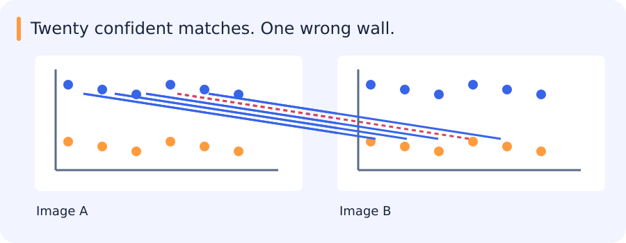

To stitch two images, find small regions that appear in both and decide which regions correspond. To estimate motion between frames, ask a similar question at a smaller time interval. A feature is a location or measurement chosen for comparison. The strength of the local image pattern, the match and the geometric agreement each provide different evidence.
Jump to a concept
Choose points that constrain motion
A flat patch changes little under motion in any direction. An edge constrains motion across the edge but poorly along it. A corner or textured patch changes in both directions. The structure tensor sums local outer products of image gradients. Two large eigenvalues indicate two constrained directions, one large eigenvalue suggests an edge, and two small ones suggest a flat region. Harris uses a scalar response such as det(M) - k trace(M)^2 to select corners.
Adding a constant to intensity leaves derivatives unchanged; multiplying intensity scales derivative responses and can move points across a fixed threshold. Rotation changes gradient orientation but ideally preserves structure-tensor eigenvalues. Sampling and implementation mean practical invariance is approximate. Harris alone is not scale invariant. SIFT detects extrema in a scale-space approximation, selects an orientation and describes a local distribution of gradients. Its normalization improves robustness to illumination and contrast, while substantial viewpoint or nonrigid changes can still break matching.
Ambiguity before geometry
Nearest-descriptor matching compares local appearances. A small absolute distance is insufficient if many candidates are equally similar. A nearest/second-nearest distance ratio rejects ambiguous matches; mutual matching checks agreement in both directions. Neither proves geometric correctness. Repeated windows on a building may produce numerous internally consistent but wrong matches.
Matching a building with repeated windows
A facade contains many nearly identical windows. A descriptor can match the appearance of one window very well while choosing the neighbouring window in the second image. If several matches make the same mistake, they can support a coherent but shifted alignment.

Geometric agreement is useful evidence, but it is agreement with a chosen model. It helps to inspect where the supporting matches lie and whether they include distinctive parts of the scene. A single unusual corner can expose an ambiguity that many repeated windows cannot.
Feature selection, descriptor matching and robust estimation address different parts of this problem; none replaces the others.
RANSAC and model validity
RANSAC repeatedly samples a minimal set, fits a model and counts geometrically consistent observations. If each sample independently has probability w of being an inlier, a minimal set has size s and the desired success probability is p, an idealized iteration count is log(1-p) / log(1-w^s). Unknown inlier ratios and degeneracy complicate this estimate. The residual threshold sets what “consistent” means; too loose accepts wrong matches and too tight rejects noisy true matches. Refit on inliers and assess their spatial coverage.
RANSAC rejects outliers relative to a model, not errors in the model family itself. A global homography cannot explain arbitrary depth parallax. Compare a simpler model when possible, and avoid reporting a successful fit based only on the number of inliers without examining where they lie.
Count agreement, then inspect where it occurs
Suppose you have twenty candidate correspondences between images. Several are wrong because the same window pattern appears many times. RANSAC repeatedly samples a small set, fits a model from that set and scores the model using the remaining candidates as well. A match supports the model if its projected point falls close enough to the observed destination. The distance threshold says what counts as close.
A model with fifteen inliers spread across the overlap can be better evidence than one with fifteen inliers all on a single wall. A dominant surface can support a valid local warp even when roofs and ground do not align together. After fitting, plot the inliers and residuals on the actual images. Inspect an unblended overlay to see which regions disagree before deciding whether the issue is a match, an estimated transform or a poor model family.
In optical flow, the local evidence is smaller. A patch with only a vertical edge can constrain sideways motion, while motion along the edge may leave its image unchanged. A corner provides intensity change in two directions. This is why the positions chosen for tracking affect what can be inferred about motion.
Self-check
Most inliers lie on one building wall, but the road and roof do not align. What is the most informative next check?
- A. Assume a global fit is verified
- B. Blend the panorama more strongly
- C. Increase iteration count immediately
- D. Plot the spatial distribution of residuals and inliers
Show answer and explanation
D. Plot the spatial distribution of residuals and inliers
Inliers concentrated on one surface can support a local warp. The spatial pattern of disagreement helps diagnose a model that fails elsewhere.
Warping and blending
Forward warping pushes source pixels to destinations and may create holes or collisions. Inverse warping visits each destination and samples its preimage, using interpolation for fractional coordinates. Verify the matrix direction: swapping image-to-image and inverse maps can produce plausible but incorrect output. Bilinear interpolation weights four neighbors; nearest-neighbor preserves discrete labels. Explicitly distinguish pixels outside the image from valid dark pixels using a validity mask.
For stitching, transform image bounds to determine canvas extent, handle negative coordinates through an offset, and blend only valid overlap. Exposure differences and parallax produce seams and ghosting. Multiband/Laplacian blending can reduce seams, but cannot repair wrong geometry. Preserve an unblended overlay for diagnosis.
Optical flow from local evidence
Brightness constancy assumes a moving point has approximately unchanged intensity. Linearizing small motion gives Ix u + Iy v + It = 0, one equation for two motion components. The aperture problem leaves motion along an edge ambiguous. Lucas–Kanade assumes approximately common motion in a local window and solves a least-squares system. Its normal matrix is the same gradient structure that explains corner quality. Use a stable solver rather than explicitly inverting a nearly singular matrix.
Large motion violates the linearization. Coarse-to-fine pyramids turn it into smaller displacements at coarse scales and refine upward. They can still fail on tiny objects, occlusion, illumination changes or motion boundaries. Motion estimates require confidence and visibility checks, not merely a dense output at every pixel.
Self-check
A patch contains only a vertical edge with constant appearance along its height. Which motion is hardest to infer locally?
- A. Motion across the edge
- B. Horizontal displacement
- C. Motion along the edge
- D. The component normal to the edge
Show answer and explanation
C. Motion along the edge
Moving along a uniform edge preserves its local appearance. The horizontal intensity change constrains motion across it.
From flow to tracks and scene understanding
A tracker associates observations over time. Keep timestamps, frame gaps, association identity and missing detections explicit. Detector errors and identity switches can dominate a downstream motion classifier. A Kalman filter predicts a state and corrects it with a measurement under uncertainty assumptions; association is a separate decision. Evaluate trajectories by source video and inspect occlusion and camera-motion cases. Adjacent frames are correlated examples and must not be randomly divided across train and test.